1. Mazo de Gigante Eléctrico + Fénix (Meta 2025)
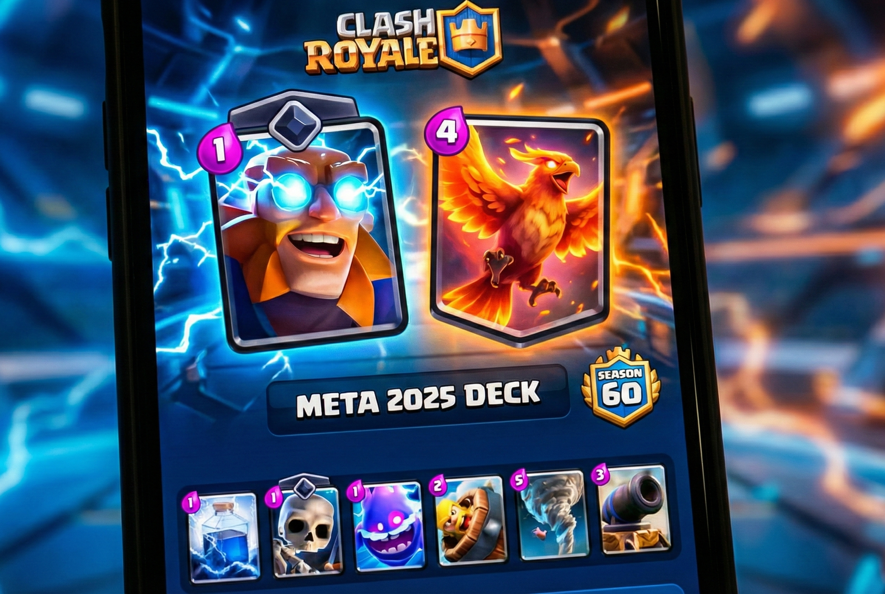
El mazo más dominante del 2025: control, presión constante y defensa sólida contra aéreo. Combinado con el Fénix y el Tornado, crea un push casi imparable.

Mazos, guías y novedades de Clash Royale
RoyaleLeaks es tu portal con los mejores mazos del meta, estrategias para subir copas y novedades oficiales de Clash Royale 2025.
Analizamos mazos de top global, jugadores profesionales, torneos y estadísticas oficiales para traerte la información más precisa.

El mazo más dominante del 2025: control, presión constante y defensa sólida contra aéreo. Combinado con el Fénix y el Tornado, crea un push casi imparable.
Rápido, barato y perfecto para subir copas. La clave es ciclar el Minero constantemente mientras defiendes con Valkiria, Bombardero y Tronco.
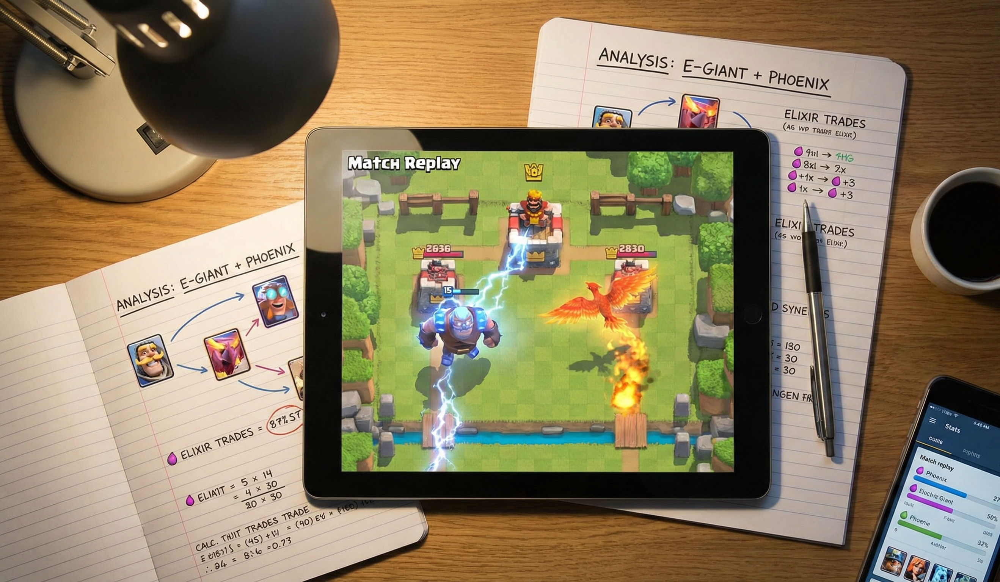
Este mazo domina el meta de 2025 por su capacidad de castigar errores. El Gigante Eléctrico actúa como una condición de victoria que se defiende sola contra enjambres (ejército de esqueletos, esbirros), mientras el Fénix proporciona una segunda vida y control aéreo.
| Categoría | Cartas del Mazo | Función Clave |
|---|---|---|
| Win Condition | *Gigante Eléctrico* | Tanque que refleja daño. |
| Soporte Aéreo | *Fénix* | Renace y limpia tropas pesadas. |
| Sinergia | *Tornado* | Junta tropas hacia el Gigante. |
| Hechizo Pesado | *Rayo* | Resetea Torres Infernales. |
💡 Pro Tip: Nunca uses el Rayo solo en la torre. Espera a que el rival coloque una estructura o una tropa de coste 4+ cerca de la torre para obtener "valor" de elixir.
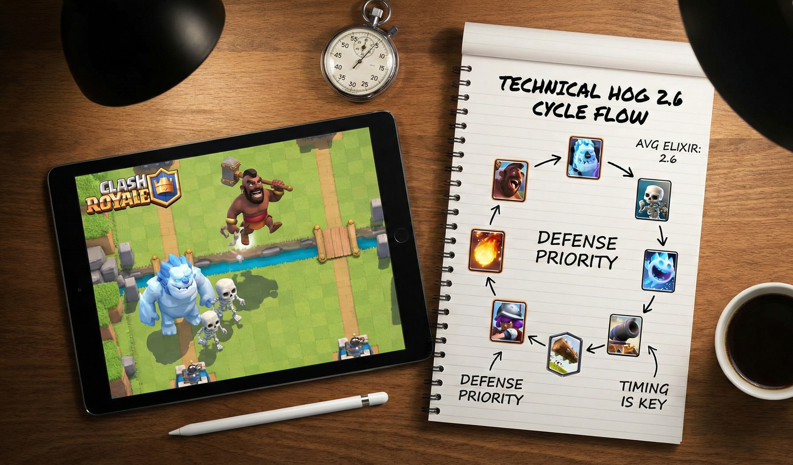
El ciclo rápido por excelencia. La filosofía de este mazo no es hacer ataques fuertes, sino atacar muchas veces (Out-cycle). Debes jugar el Montapuercos más rápido de lo que el rival puede recuperar su estructura defensiva.
| Carta | Función |
|---|---|
| *Montapuercos* | Daño constante a Torre. |
| *Mosquetera* | Tu única defensa de alto daño (DPS). ¡Protégela! |
| *Golem de Hielo* | Tanque barato para distraer (Kiting). |
| *Cañón* | Defensa de tanques terrestres. |
Ganar con 2.6 depende de tu defensa, no de tu ataque. Aquí las técnicas vitales:
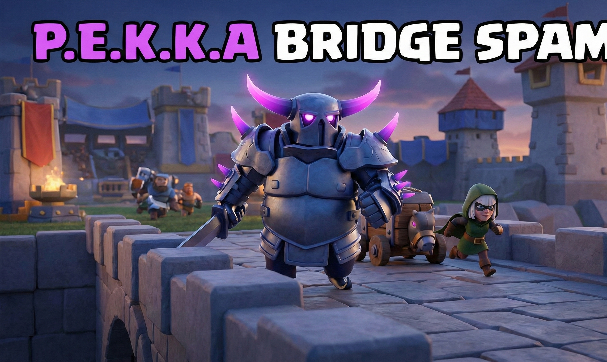
El arquetipo de "Bridge Spam" se basa en castigar al rival cuando tiene poco elixir. Si el oponente gasta mucho en un Golem al fondo, tú atacas rápido en el puente con Bandida o Fantasma Real.
Un error de novatos es usar al P.E.K.K.A para atacar. ¡No lo hagas! LEER MASS...
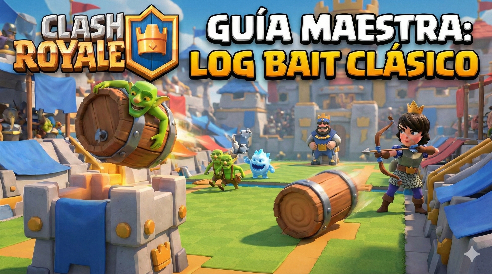
El "Log Bait" no es solo un mazo, es un estilo de vida en Clash Royale. Su filosofía es el desgaste psicológico: obligas al rival a usar su único hechizo ligero (El Tronco/Flechas) en tu Princesa o Pandilla, dejándolo indefenso ante tu Barril de Duendes. LEER MASS...
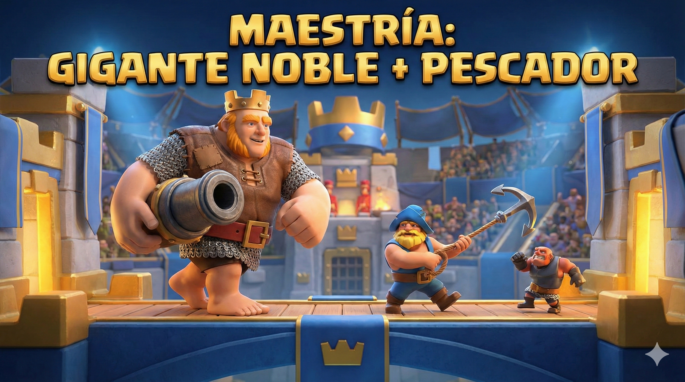
Este mazo define el arquetipo de "Contragolpe Pesado". El Gigante Noble es una amenaza constante por su rango, pero la verdadera estrella es el Pescador, quien se encarga de quitar las defensas que el rival pone para matar a tu gigante. LEER MASS...
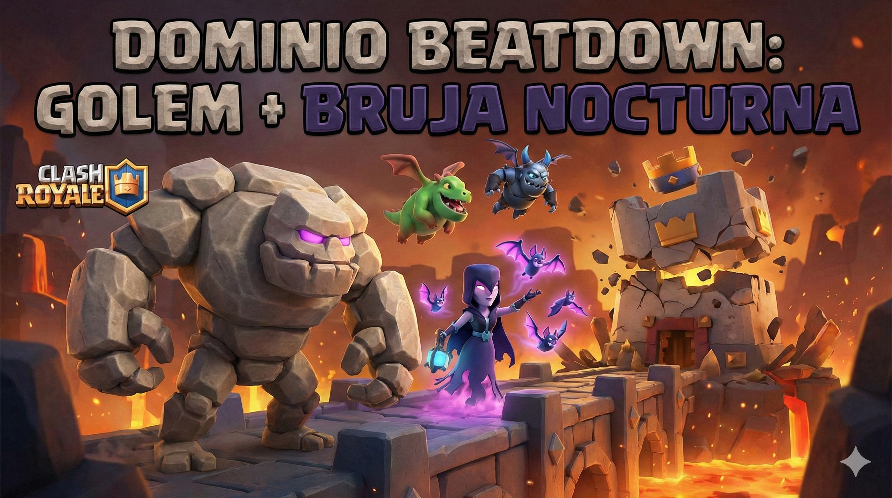
El arquetipo *Beatdown* por excelencia. Este mazo no busca ganar por "poquito", busca arrasar y conseguir las 3 coronas. La estrategia consiste en ignorar el daño leve en tus torres para acumular una ventaja de elixir masiva y crear un ataque imparable en el último minuto. LEER MASS...
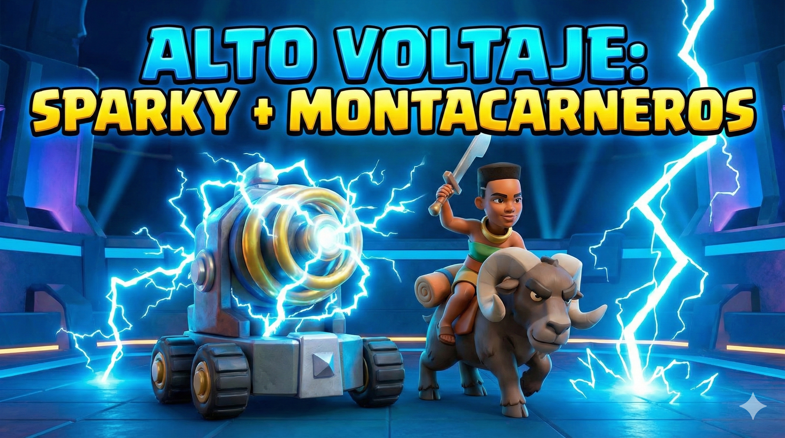
Este mazo combina la destrucción masiva de *Sparky* con la versatilidad de la *Montacarneros*. Es un mazo de "doble amenaza": si el rival gasta todo su elixir parando a Sparky, la Montacarneros destruirá su torre, y viceversa. LEER MASS...
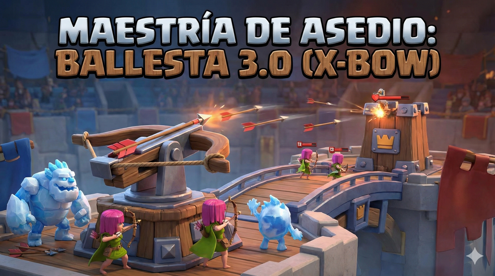
El mazo de *Ballesta* es el rey del arquetipo de "Asedio". A diferencia de otros mazos, tú no cruzas el puente; obligas al rival a pelear en tu terreno. Es un mazo de paciencia extrema, cálculo de elixir y defensa perfecta. LEER MASS...
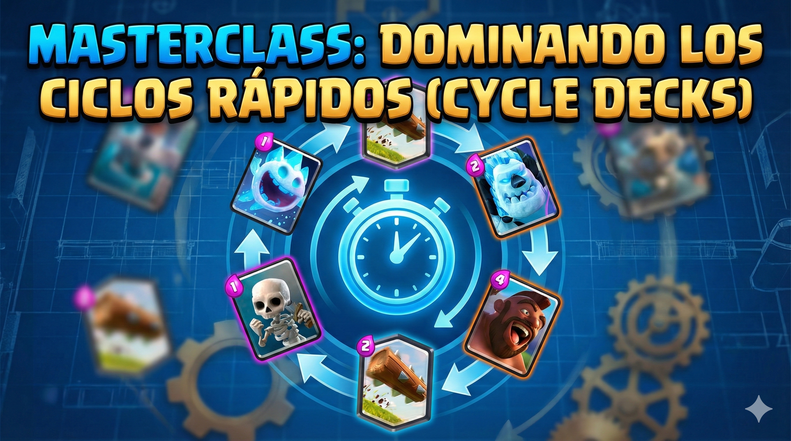
Los mazos de ciclo rápido (promedio de elixir 2.6 - 3.0) no ganan por fuerza bruta, ganan por *velocidad y matemáticas*. Tu objetivo es aprovechar los momentos en los que el rival no tiene en mano su carta defensiva clave (Counter). LEER MASS...
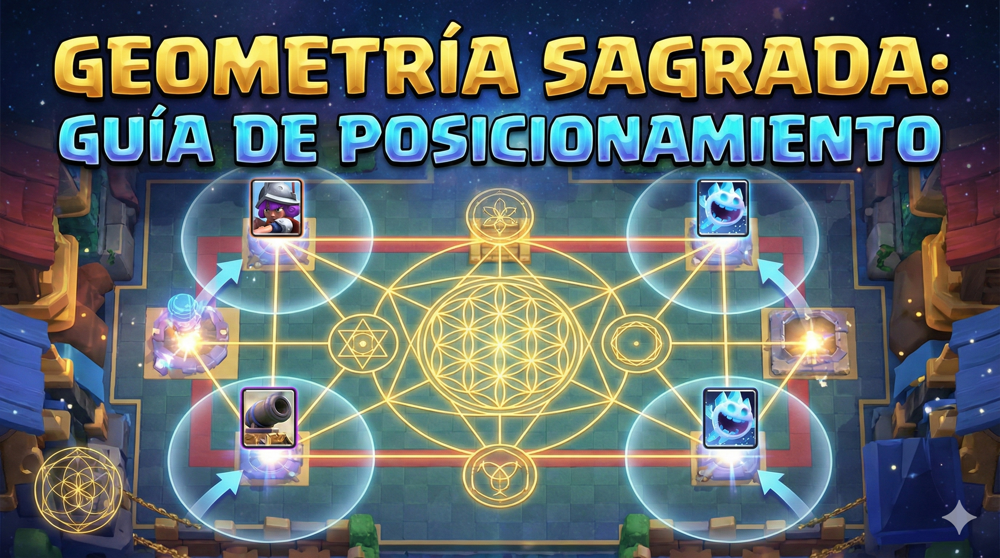
En Clash Royale, el tablero es una cuadrícula matemática. Colocar una estructura una casilla (tile) más a la derecha o a la izquierda puede significar la diferencia entre defender un Golem perfecto o perder la torre. Aquí aprenderás a dominar el espacio. LEER MASS...
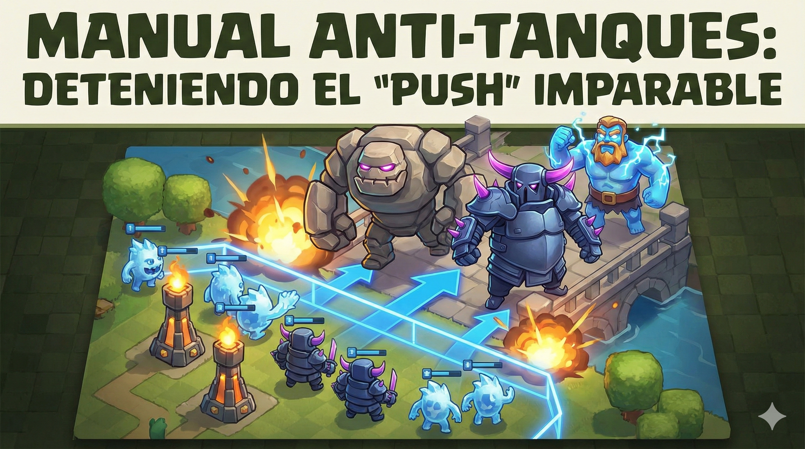
Enfrentarse a un Golem, P.E.K.K.A o Megacaballero puede dar miedo, pero recuerda: *El tanque no es lo que te mata, lo que te mata es lo que viene detrás.* Aquí aprenderás a desmantelar ataques pesados pieza por pieza. LEER MASS...
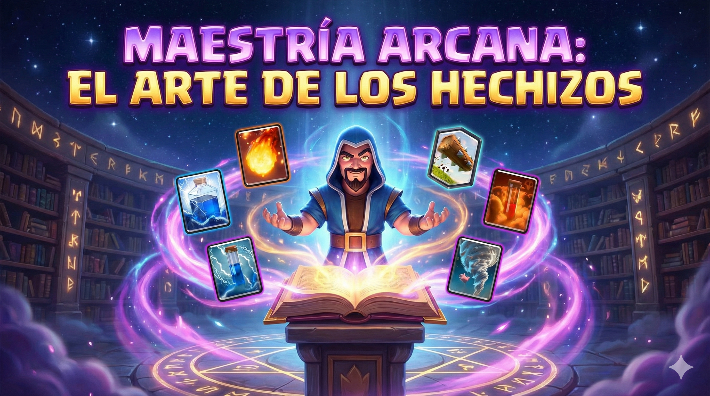
Los hechizos no son solo apoyo; a menudo son tu condición de victoria. Un buen jugador usa tropas para defender y hechizos para atacar, pero un jugador experto gana la partida solo calculando el daño de sus hechizos. Aquí aprenderás a no desperdiciar ni una gota de elixir.
Nunca lances un hechizo grande (Bola de Fuego, Veneno, Cohete) a una sola tropa a menos que sea una emergencia. Busca siempre golpear Tropa + Tropa + Torre.
| Hechizo | Uso Básico (Mal Valor) | Uso Pro (Alto Valor) |
|---|---|---|
| *Bola de Fuego* (4) | Solo a una Mosquetera (4). Intercambio: Neutro. | Mosquetera (4) + Torre + Espíritu. Intercambio: +1 y daño a torre. |
| *El Tronco* (2) | Solo a una Princesa en el puente. | Princesa + Barril de Duendes + Torre. Intercambio: +4 de ventaja. |
| *Cohete* (6) | Para matar un Globo (5). Intercambio: -1 (Pierdes elixir). | Verdugo + Montapuercos + Torre. Intercambio: Masivo. |
Llega un momento en la partida (generalmente en el Triple Elixir) donde tus tropas ya no llegarán a la torre rival porque la defensa es muy fuerte. Aquí cambia tu estrategia:
Si notas que tu rival siempre tira su Ejército de Esqueletos para parar a tu Montapuercos, haz esto:
⛔ Alerta de Torre del Rey: Ten mucho cuidado con los hechizos de área grande (Tornado, Flechas, Bola de Fuego). Si rozas la Torre del Rey central y la activas al inicio de la partida, habrás reducido drásticamente tus posibilidades de ganar, especialmente si juegas Cementerio o Montapuercos.
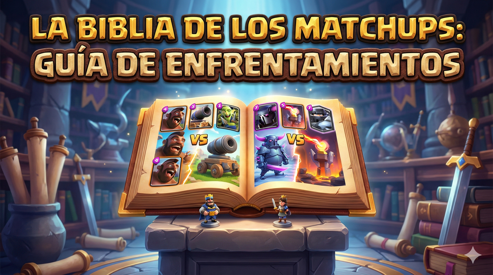
En Clash Royale, no todas las partidas son justas. A veces tendrás ventaja (80-20) y a veces tendrás un "Hard Counter" en contra. Ganar depende de identificar qué tipo de mazo tiene el rival en los primeros 30 segundos y adaptar tu plan de juego.
Antes de jugar cartas, entiende la macro-estrategia. Generalmente:
| Si te enfrentas a... | Tu Plan de Victoria |
|---|---|
| *Log Bait (Barril)* | Disciplina de Hechizos. NUNCA uses tu Tronco/Descarga en la Princesa. Guárdalo exclusivamente para el Barril de Duendes. Mata a la Princesa con tropas. |
| *Golem / Sabueso* | Castigo de Carril Opuesto. En cuanto veas que gastan 7 u 8 de elixir atrás, ataca con todo por el otro puente. Oblígalos a defender y dejar a su tanque solo. |
| *Ballesta (X-Bow)* | Tanqueo Central. No entres en pánico. Guarda siempre tu tanque (Caballero, Gigante, Golem) y colócalo en el centro de tu campo justo cuando la Ballesta se active. |
| *Cementerio* | Bloqueo de Tanque. No defiendas el cementerio primero; mata al tanque que está recibiendo el daño de la torre (Caballero/Baby Dragon). Una vez muerto el tanque, la torre limpiará los esqueletos. |
A veces te tocará jugar contra tu peor pesadilla (ej: Juegas Chispitas y el rival tiene Cohete). ¿Qué haces?
🧠 Pro Tip: Identificar el mazo rival rápido es clave. Si el rival empieza con Espíritu de Hielo + Esqueletos, hay un 90% de probabilidad de que sea Montapuercos 2.6 o Ballesta. No gastes tu P.E.K.K.A o Megacaballero al inicio hasta estar seguro.
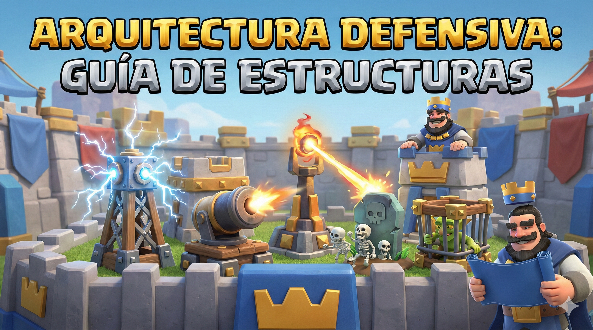
Las estructuras son el freno de mano del juego. Su función principal no es solo hacer daño, sino *comprar tiempo* y desviar a los tanques enemigos (Hog Riders, Golems, Gigantes) hacia el centro de la arena para que reciban fuego cruzado.
No todas las defensas sirven para lo mismo. Elige según la debilidad de tu mazo:
| Estructura | Coste | Mejor Uso (Best in Slot) |
|---|---|---|
| *Cañón* | 3 | Ciclo Rápido. La defensa más eficiente contra Montapuercos. Alto daño, pero poca vida. |
| *Torre Tesla* | 4 | Versatilidad. Ataca aire y tierra. Su mecánica de "esconderse" la hace inmune a hechizos cuando no está disparando. |
| *Lápida* | 3 | Anti-Tanques Pesados. Genera esqueletos que distraen infinitamente a P.E.K.K.A, Príncipe y Bandida. |
| *Jaula del Forzudo* | 4 | Contraataque. No hace daño, pero aguanta golpes. Al romperse, libera al Forzudo que sirve para atacar el otro carril. |
| *Torre Bombardera* | 4 | Daño de Área. La pesadilla de los Puercos Reales, Barril de Esqueletos y Brujas. |
Saber cuándo colocar tu edificio es vital para no desperdiciar elixir:
Contra un Golem o Sabueso, no pongas la estructura directo en su cara. Colócala en el centro opuesto (plantilla 4-3). Esto obliga al tanque a caminar en diagonal, recorriendo más distancia y recibiendo más daño antes de tocar la estructura.
✅ Pro Tip (El Terremoto): El hechizo de Terremoto destroza las estructuras. Si tu rival lo tiene, deja de usar tu edificio en la posición defensiva estándar. Colócalo más alto o pegado a la torre del rey para que el rival no pueda golpear tu Torre de Princesa y tu edificio con el mismo Terremoto.
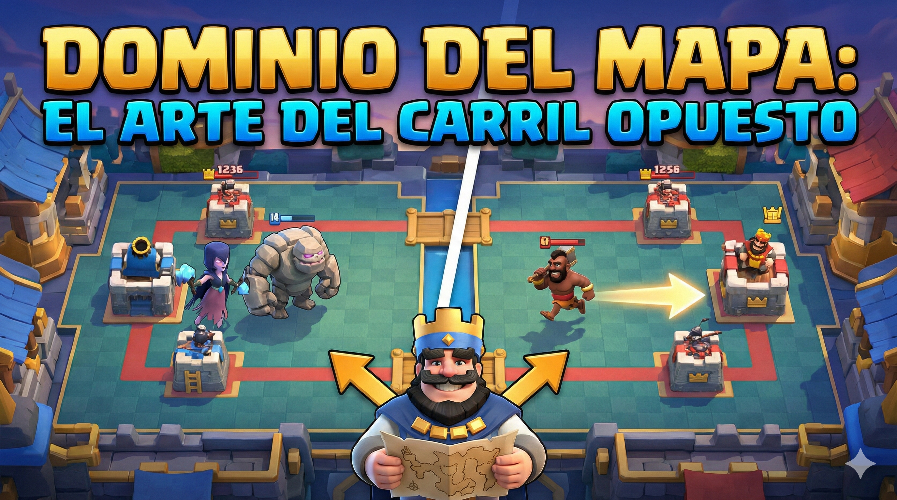
Muchos jugadores pierden porque se obsesionan con un solo carril. Clash Royale es un juego de dos torres. Saber cuándo presionar el lado contrario (Cross-map pressure) es la clave para desestabilizar a mazos pesados y romper defensas sólidas.
Esta regla es simple: Si el rival gasta mucho elixir atrás, tú castigas adelante.
No siempre debes atacar el otro lado. Usa esta guía rápida:
| Situación del Rival | Tu Respuesta Correcta |
|---|---|
| *Juega Golem/Sabueso atrás* | ATAQUE TOTAL al carril opuesto. Oblígalo a dividir sus fuerzas. |
| *Juega Recolector de Elixir* | Si tienes un hechizo grande (Cohete/Rayo), úsalo. Si no, ataca el puente inmediatamente. No le dejes generar ventaja. |
| *Tiene una torre a < 500 HP* | Si ves que defiende excesivamente esa torre débil, cambia de carril. Empieza a bajar la otra torre. A veces es más fácil empezar de cero que romper una defensa blindada. |
Algunos mazos (como Puercos Reales o Tres Mosqueteras) están diseñados para atacar ambos carriles a la vez.
Usa cartas que se puedan dividir en el centro. Si el rival tiene una Torre Bombardera en el centro, dividir tus tropas (2 puercos a la izquierda, 2 a la derecha) hace que su estructura sea inútil, ya que solo puede defender un lado.
💀 Concepto "Dead Lane" (Carril Muerto): Si tu torre tiene 300 de vida y el rival viene con un ataque fuerte, DÉJALA CAER. No gastes 7 de elixir intentando salvar una torre que ya está perdida. Usa ese elixir para atacar su torre intacta por el otro lado. Aprende a aceptar el intercambio (Trade).
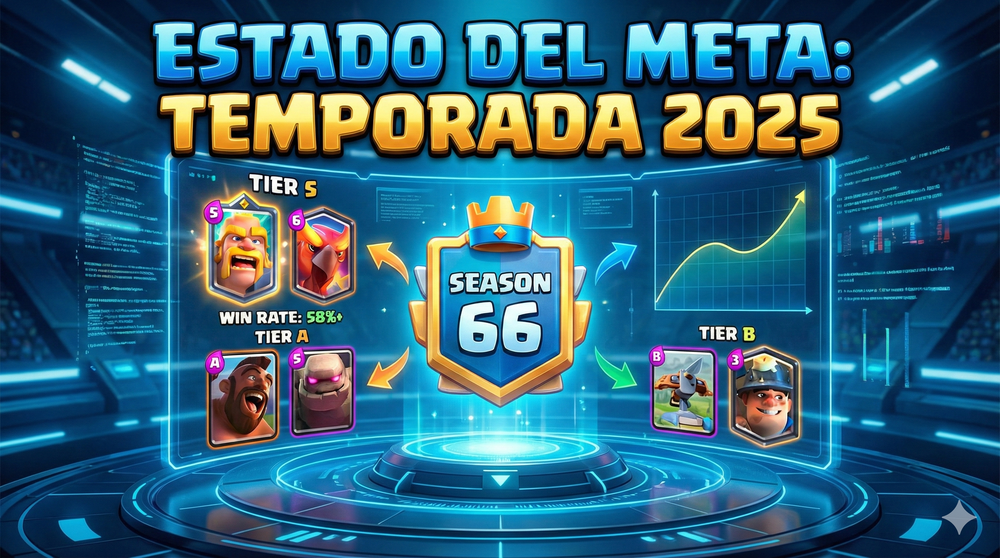
El meta actual ya no se define solo por cartas, sino por *Evoluciones*. Con la habilitación del segundo slot de evolución (Nivel 15), los mazos que no aprovechan dos evoluciones están en desventaja matemática. El juego se ha vuelto más agresivo y rápido.
Si quieres competir en Ultimate Champion, necesitas al menos una de estas cartas en tu mazo:
| Carta Evolucionada | ¿Por qué domina? |
|---|---|
| *Caballero (Evo)* | El mejor mini-tanque del juego. Su reducción de daño mientras camina lo hace casi inmortal contra daño a distancia. |
| *Bombardero (Evo)* | Ciclo de 1 de elixir. Su bomba rebota y daña la torre desde el puente. Obliga al rival a gastar hechizos constantemente. |
| *Tesla (Evo)* | Defensa impenetrable. Su onda de choque paralizante reinicia tropas, anulando cargas de Príncipes y Montacarneros. |
| *Zap / Descarga (Evo)* | El hechizo pequeño rey. Mata barriles y hace daño en área triple. Esencial contra mazos de Log Bait. |
No inviertas oro en estas cartas por ahora; su uso ha caído drásticamente en Top Ladder:
⚠ Aviso de Balance: Supercell ajusta las cartas mensualmente. Lo que hoy está "Roto" (OP), mañana puede ser nerfeado. Recomendamos revisar las notas del parche oficial dentro del juego antes de gastar tus comodines de élite.
¿Dudas o sugerencias?
soporte@royaleleaks.comEn RoyaleLeaks, la privacidad de nuestros visitantes es de extrema importancia. Este documento de política de privacidad describe los tipos de información personal que recibe y recopila RoyaleLeaks y cómo se utiliza.
Archivos de registro: Al igual que muchos otros sitios web, RoyaleLeaks hace uso de archivos de registro. La información dentro de los archivos de registro incluye direcciones de protocolo de internet (IP), tipo de navegador, proveedor de servicios de internet (ISP), fecha y hora, páginas de referencia/salida y número de clics para analizar tendencias, administrar el sitio y recopilar información demográfica. Las direcciones IP y otra información similar no están vinculadas a ninguna información que sea personalmente identificable.
Cookies y Web Beacons: RoyaleLeaks utiliza cookies para almacenar información sobre las preferencias de los visitantes y registrar información específica del usuario sobre las páginas a las que el usuario accede o visita.
Cookie de Google DoubleClick DART:
Este contenido no está afiliado, respaldado, patrocinado ni aprobado específicamente por Supercell y Supercell no es responsable del mismo. Para obtener más información, consulte la Política de contenidos de fans de Supercell: https://supercell.com/en/fan-content-policy/.
Todas las imágenes de cartas, personajes y logotipos de Clash Royale son propiedad intelectual de Supercell. Este sitio web es una guía educativa y de estrategia creada por fans para fans.
Si necesita más información o tiene alguna pregunta sobre nuestra política de privacidad, no dude en contactarnos por correo electrónico a: soporte@royaleleaks.com